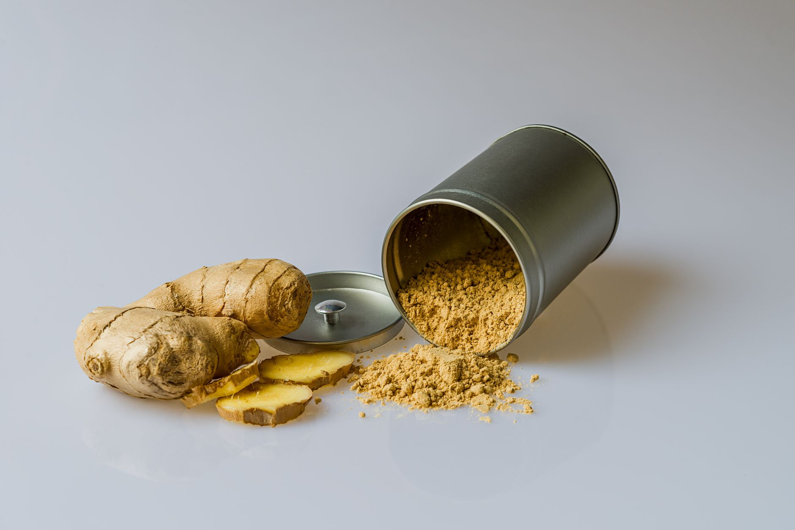

Inicio/Artículos/Suplementos · Adaptógenos
Ashwagandha: qué es y qué dice la ciencia sobre sus efectos
10 min de lectura · Actualizado 25 de agosto de 2026 · Por Miguel Lopez

Introducción
Difícil escapar de ella en cualquier feed de bienestar: cápsulas de ashwagandha promocionadas como solución para el estrés, el sueño y hasta el rendimiento en el gimnasio. Es uno de los suplementos "adaptógenos" más vendidos del mundo, y también uno de los más citados (y a veces malinterpretados) cuando se habla de cortisol. Este artículo repasa qué es realmente la ashwagandha (Withania somnifera), qué dice la evidencia científica sobre sus efectos y qué contraindicaciones conviene conocer.
Qué es la ashwagandha
La ashwagandha es un arbusto de zonas tropicales y subtropicales de India, África y Oriente Medio, cuyo nombre científico es Withania somnifera. El nombre en sánscrito combina "ashwa" (caballo) y "gandha" (olor) porque, según la tradición, la raíz fresca huele de forma parecida al pelaje de un caballo. Lleva miles de años usándose en la medicina ayurvédica y unani como adaptógeno: una categoría de plantas a las que tradicionalmente se atribuye la capacidad de ayudar al cuerpo a resistir y adaptarse a distintos tipos de estrés. Sus componentes activos principales son un grupo de lactonas esteroídicas llamadas withanolides, junto con varios alcaloides, a los que se atribuyen la mayoría de sus efectos propuestos.
No es un descubrimiento reciente de TikTok. Es una planta con siglos de uso tradicional que, en los últimos 15-20 años, ha pasado a estudiarse en decenas de ensayos clínicos con humanos, sobre todo en India. Eso significa que hoy hay más evidencia real que antes, pero también que gran parte de esos estudios son todavía pequeños, de corta duración y realizados en poblaciones concretas, algo que conviene tener presente antes de sacar conclusiones demasiado grandes.
Qué dice la evidencia sobre el estrés y el cortisol
Es la línea de investigación más consistente sobre la ashwagandha. Una revisión sistemática de 2021 identificó 7 ensayos controlados con placebo (491 adultos en total, la mayoría en India) y encontró que la ashwagandha redujo de forma significativa los niveles de estrés y ansiedad percibidos frente a placebo. Un metaanálisis posterior, con 15 estudios y 873 participantes, confirmó reducciones estadísticamente significativas tanto en cortisol como en las puntuaciones de escalas de estrés (PSS) y ansiedad (HAM-A) a las 8 semanas de tratamiento.
En cuanto al cortisol en concreto (la hormona que suele señalarse como "marcador" del estrés), varios ensayos individuales muestran caídas medibles en sangre o saliva. Por ejemplo, un ensayo con 130 adultos que tomaron un extracto estandarizado durante 90 días encontró mejoras tanto en las escalas de estrés como en el cortisol sérico; otro, con adultos que lo tomaron durante 30 días, observó niveles más bajos de cortisol salival frente al grupo placebo. Dicho esto, no todos los metaanálisis coinciden en la magnitud del efecto, y al menos uno de los más recientes concluye que, aunque el cortisol baja de forma consistente, eso no siempre se traduce en una reducción igual de clara del estrés percibido por la persona: son medidas relacionadas, pero no idénticas.
En resumen, la ashwagandha cuenta con una de las bases de evidencia más sólidas entre los adaptógenos para reducir marcadores de estrés y cortisol en adultos, con efectos modestos pero consistentes en varios ensayos. No es una "cura" para la ansiedad ni sustituye un abordaje profesional si el estrés es intenso o persistente.
Sueño y rendimiento deportivo: lo que sabemos
La evidencia sobre el sueño va en la misma dirección, aunque con un efecto más discreto. Una revisión sistemática de 2021 reunió 5 ensayos (372 adultos, de 6 a 12 semanas de duración) y encontró un efecto "pequeño pero significativo" de la ashwagandha mejorando la calidad del sueño frente a placebo, más marcado en tratamientos de al menos 8 semanas y en personas que ya tenían insomnio. Un ensayo concreto con 150 participantes que tomaron un extracto de raíz y hoja durante 6 semanas encontró una mejora subjetiva del sueño en el 72% del grupo con ashwagandha frente al 29% del grupo placebo.
Sobre rendimiento deportivo, un metaanálisis centrado en el consumo máximo de oxígeno (VO2 máx, un indicador de capacidad aeróbica) con 4-5 ensayos y entre 142 y 162 participantes encontró una mejora estadísticamente significativa (diferencia media de +3,00 ml/kg/min) en tratamientos de entre 2 y 12 semanas. Es un resultado real, pero con alta variabilidad entre estudios (heterogeneidad elevada) y calidad de evidencia calificada como baja según los criterios GRADE, así que conviene leerlo como una señal prometedora, no como un beneficio garantizado ni comparable al efecto de un buen plan de entrenamiento.
Si te interesa otra estrategia complementaria muy comentada para la recuperación física, en nuestro artículo sobre baños de hielo y duchas frías repasamos qué dice la evidencia sobre esta práctica.
Efectos secundarios y con quién interactúa
A corto plazo (hasta unos 3 meses de uso en los ensayos clínicos), la ashwagandha suele tolerarse bien. Los efectos secundarios más frecuentes descritos en los estudios son leves y digestivos: malestar estomacal, heces sueltas, náuseas y somnolencia. De forma poco frecuente se han descrito casos de lesión hepática aguda (incluyendo una serie de 5 casos en adultos que desarrollaron ictericia y otros signos de afectación del hígado tras varias semanas de uso, y que se resolvieron al suspender el suplemento), así como algún caso de alteración del ritmo cardíaco. No hay suficiente información sobre su seguridad a largo plazo (más allá de varios meses de uso continuado).
Existen condiciones en las que la evidencia recomienda extremar la precaución y consultar con un profesional de salud: embarazo o lactancia (se ha asociado a riesgo de aborto y varias agencias sanitarias, incluida la francesa ANSES en 2024, recomiendan evitarla en el embarazo); enfermedad tiroidea o autoinmune (puede elevar la hormona tiroidea y existen casos descritos de tirotoxicosis); cáncer de próstata sensible a hormonas; cirugía programada próximamente; o uso de sedantes, inmunosupresores, medicación para la tiroides, antidiabéticos o antihipertensivos, por el riesgo de interacción.
Nuestra conclusión
La ashwagandha no es magia ni un placebo con buen marketing. Es una planta adaptógena con una base de evidencia razonable, sobre todo para reducir marcadores de estrés y cortisol y, en menor medida, para mejorar la calidad del sueño, con indicios más preliminares sobre el rendimiento deportivo. Los efectos son reales pero modestos, los estudios siguen siendo mayoritariamente pequeños y de corta duración, y tiene contraindicaciones e interacciones que no deben tomarse a la ligera, en especial en embarazo, problemas de tiroides o si se toma otra medicación. Cualquier decisión sobre suplementación corresponde evaluarla con un profesional de salud: no sustituye dormir bien, entrenar con cabeza o tratar un problema de salud mental que lo requiera.
- ¿Qué es la ashwagandha?
- Un arbusto adaptógeno (Withania somnifera) de uso tradicional en la medicina ayurvédica, cuyos componentes activos principales son los withanolides.
- ¿Cuánto tarda la ashwagandha en hacer efecto?
- En los estudios que muestran reducción del cortisol y mejora del estrés, los efectos se observan a partir de las 4-8 semanas de uso continuado, no de un día para otro. Un uso puntual y aislado no cuenta con el mismo respaldo científico que un uso sostenido en el tiempo.
- ¿Es segura para el uso diario?
- En los ensayos clínicos, el uso diario durante varios meses se toleró razonablemente bien en la mayoría de los participantes, pero no hay suficientes estudios de seguridad a largo plazo. Está contraindicada en embarazo y lactancia, y debe evitarse con enfermedades autoinmunes, de tiroides o problemas hepáticos sin supervisión médica.
- ¿La ashwagandha sirve para dormir mejor?
- Puede ayudar indirectamente al reducir el estrés y la ansiedad, pero su efecto como inductor del sueño es más modesto que el de suplementos estudiados específicamente para eso, como la melatonina o el magnesio glicinato.
- ¿Interactúa con algún medicamento?
- Sí: puede potenciar sedantes, medicación para la tiroides e inmunosupresores, entre otros. Cualquier persona que tome medicación crónica debería consultarlo con su médico antes de considerar este suplemento.
- ¿Hace ganar peso o masa muscular?
- No es un anabolizante. Algunos estudios en hombres que entrenan fuerza muestran pequeñas mejoras en fuerza y recuperación, probablemente relacionadas con la reducción del cortisol, pero no hay evidencia de que genere ganancia muscular por sí sola, sin entrenamiento y dieta adecuados.
- ¿Los estudios distinguen el momento del día en que se toma?
- Los ensayos varían: algunos la administraron por la noche cuando el objetivo evaluado era el sueño, y otros por la mañana o repartida en el día cuando el foco era el estrés general o el rendimiento deportivo. No hay evidencia de que un horario sea claramente superior a otro.
- ¿Tiene contraindicaciones la ashwagandha?
- Sí: la evidencia desaconseja su uso en embarazo y lactancia, y recomienda precaución en personas con enfermedades tiroideas, autoinmunes o hepáticas, por lo que conviene consultar con un médico si existe alguna de estas condiciones.
Preguntas frecuentes
Fuentes
Enlaces a la fuente original, para que puedas comprobarlo por tu cuenta.
Miguel Lopez
Periodista independiente, no profesional sanitario. Escribe sobre tendencias de salud y fitness citando siempre las fuentes primarias, para que puedas comprobarlo por tu cuenta. Más sobre el sitio.